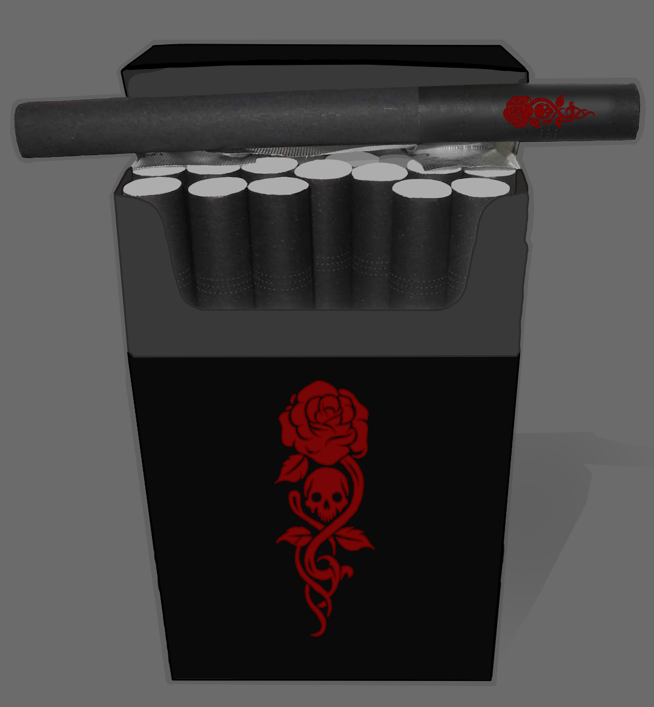

Ciekawostki
-
Symbol róży zdobi jej broń oraz osobiste dodatki. To nie tylko estetyka – róża jest kwiatem, który przypomina jej zaginioną bratnią duszę. Każdy płatek to wspomnienie, każdy kolec – ból straty.
-
Nigdy nie zdejmuje czerni. To nie moda, to żałoba, którą nosi jak drugą skórę. Żałoba, która nie przemija, bo rana nigdy się nie zabliźniła.
-
Część jej włosów spleciona jest w jeden, ciężki warkocz, którego – zgodnie z dawnym rytuałem – nie wolno rozplatać nikomu, poza jej przyszłym mężem. Dopóki warkocz nie zostanie rozwiązany, jej serce pozostaje zamknięte.
-
Ulubiony kolor? Ten, który przypomina krew. Nasycony, głęboki karmin – nie dla dramatyzmu, ale dlatego, że tylko ten odcień wydaje jej się naprawdę żywy.
-
Czarne papierosy są jej stałym towarzyszem. Pali nie po to, by zapomnieć, lecz by pamiętać – każdy dymny ślad to jak modlitwa złożona z popiołu.

-
Zna sztukę haftu – nauczyła się jej, by przetrwać samotność. Jej ubrania i dodatki noszą ślady tej cierpliwej pracy: czerwone nici wplecione w czerń, znaki, których nikt poza nią nie rozumie.
-
Jej ciało to mapa blizn, jednak większość z nich ukryta jest pod warstwami tkanin. Jedna z nich zdradza przeszłość – blizna przechodząca przez oko, zakryta opaską.
-
Jej paznokcie to małe dzieła sztuki: górna część zawsze w czerni, dolna – krwista czerwień.